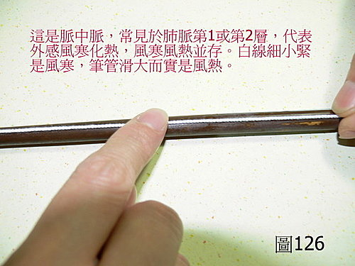

脈理醫理學 33.1：浮脈（一）
作者：陳建元
說明：
浮脈是指脈的脈位而言。凡是整個脈的脈位，主要位於第1層，或是第2層的，都可以算是浮脈。浮脈是單指脈的脈位而言，和脈的形狀、寬度、有力無力沒有關係，所以單獨一個浮字，沒辦法形成一個完整的脈象，浮脈必兼其他脈象，如浮滑、浮細、浮弱、浮濡、浮細緊、浮洪、浮澀……如此才能形成一個完整的脈象描述。在古今很多的醫案中，會看到很多人的醫案上，關於脈象上的記載，只寫一個浮字，這樣的描述非常不完全，往往是敷衍下的答案，並不是臨床所見的真相。
本質和病機：
浮而有力，病機是主外感，外感向內入侵，體內正氣向外抵抗防禦，僵持在半途，故浮而有力（少部分見於病人極為嚴重的瀕死狀態，但必有其他嚴重兼症，不易混淆）。浮而無力，病機是主氣血陰陽諸虛，諸虛氣血渙散而不斂（氣血的統攝管轄無法達到定位），所以無法把脈位拉回在平脈的正確定位上，故浮而無力，但需要參考其他兼脈才能判定到底是哪一種虛損。【註：也有部分病人有明顯的外感症狀，但脈卻是浮而無力，這是因為本來就諸虛氣血不足之人，又患感冒，而正氣不足以外抗，所以無力，但若稍用補藥，正氣一充，會見脈轉有力，蓋正氣一充實，欲與外邪相抗也。這種情況要四診相參才不會遺漏】
所謂的有力無力，用第25.1條的包子皮軟硬度來判定即可。外感時常見浮脈，以肺脈浮的機會最大，代表疾病是由肺系上焦開始的，心脈浮、脾脈浮則為常見的第二順位，或肺浮而其他不浮，或肺心浮而其他不浮，或脾浮而其他不浮，各有不同的意義，通常不會6脈一同俱浮（除非較嚴重的，或是日久一脈傳六的），自己多試幾次，找一些外感病人來試，在幾天之內，就是一個醫學新手，也會馬上發現外感並非一次6脈俱浮這件事實。古書宋本傷寒例說，太陽受病是六脈俱浮，並非事實，後代一票醫家跟著錯誤，自己也不驗證，更是草率。

兼脈：
浮脈只是一種脈位，所以浮可兼多種脈象。浮滑有力是外感風熱。浮滑有力兼數是較嚴重的外感風熱。浮細緊小有力是外感風寒（小是指脈寬比正常脈窄）。浮滑有力，中有一細緊小脈，是風寒正在轉成風熱，是風寒風熱並存（〈圖126〉，參看第 44 條 脈中脈）。浮濡風濕。浮無力是虛。浮散無力是虛甚而不斂。浮澀無力是虛兼血瘀。浮大無力或氣虛或血虛（兼外症面色觀之，面色恍白偏氣虛，面色不華偏血虛）。浮細無力或陰虛或陽虛（兼外症面色觀之，面色清白帶寒偏陽虛，面色嫩紅帶熱偏陰虛）。
六部浮脈：
右寸浮：有力為風寒感冒、為風熱感冒、為鼻塞鼻涕、為頭痛頭暈、為痰、為咳嗽；無力為喘、為短氣、為說話無力、為多汗。
右關浮：有力為外感腹脹腹瀉，為脾熱口臭；無力為脾虛、為腹脹、為便軟、為四肢無力。
右尺浮：有力為外感入下焦、為腹瀉、為便秘；無力為下焦陽虛、為腹瀉、為腰膝酸軟、為腎不納氣而喘。
左寸浮：有力為外感頭痛、為外感病毒性心肌炎胸悶；無力為胸悶、為短氣、為多汗、為心悸、為喘。
左關浮：有力為外感入肝經、為頭痛、為筋骨酸澀、為目赤目痛、為耳鳴眩暈；無力為眩暈、為視物不清、為筋骨酸澀、為經血量不足、為崩漏。
左尺浮：有力為外感入下焦膀胱、為小便赤澀、為尿痛、為月事痛、為月事量不正常；無力為腰膝酸軟、為崩漏、為腎不納氣而喘、為小便無力。
治療藥物：
肺脈：桂枝（風寒）、麻黃（風寒）、紫蘇（風寒）、蒼耳子（風濕）、連翹（風熱）、金銀花（風熱）、桑葉（風熱）、黨參＋五味子（氣虛）、黃耆＋五味子（氣虛）、玉竹＋五味子（陰虛）、乾薑＋五味子（陽虛）。
脾脈：香薷（風寒）、藿香（風濕）、防風（風濕）、葛根（風熱）、黨參＋烏梅（氣虛）、黃耆＋烏梅（氣虛）、玉竹＋烏梅（陰虛）、山藥＋烏梅（陰虛）、乾薑＋烏梅（陽虛）。
心脈：桂枝（風寒）、川芎（風寒）、連翹（風熱）、桂枝＋茯苓（風濕）、黨參＋蓮子（氣虛）、製附子＋蓮子（陽虛）、酸棗仁（血虛）、麥門冬＋蓮子（陰虛）。
肝脈：荊芥（風寒）、防風（風濕）、桑葉（風熱）、金菊花（風熱）、酸棗仁（血虛）、白芍（陰虛）、沙苑子（氣虛）、山茱萸＋肉桂（陽虛）。
兩尺脈：細辛（風寒）、羌活（風濕）、獨活（風濕）、桑葉＋牛膝（風熱）、金菊花＋牛膝（風熱）、熟地＋五味子（陰血虛）、杜仲＋五味子（氣虛）、製附子、肉桂＋五味子（陽虛）。
【註：浮而無力者，氣機向外散出，故用補時，除了補藥之外，當如上述所例略加收澀藥，以利下收浮脈歸回正常位。】
或問：
陳老師！文中 外感時常見浮脈，以肺脈浮的機會最大，代表疾病是由肺系上焦開始的，心脈浮、脾脈浮則為常見的第二順位，或肺浮而其他不浮，或肺心浮而其他不浮，或脾浮而其他不浮，各有不同的意義。
問題一：如果今天把到腎陽脈為──浮而有力，這時是不是應該合參其他三診（有流涕咳嗽……等等），才能推斷是外感入下焦，病機在腎，症狀會有腹瀉便秘。
換言之，若無外徵， 而把到腎陽脈為──浮而有力， 就不是外感，但一樣有腹瀉便秘的症狀。不知道我這樣的想法是否正確？
問題二：浮脈的脈位分佈部位不同，老師您說有不同的意義，文中應該沒有詳述（如果是我眼拙，請老師指點一下迷津。）這部份再麻煩老師的指導！
問題一：如果今天把到腎陽脈為──浮而有力，這時是不是應該合參其他三診（有流涕咳嗽…等等），才能推斷是外感入下焦，病機在腎，症狀會有腹瀉便秘。
答：是。
換言之，若無外徵， 而把到腎陽脈為──浮而有力， 就不是外感，但一樣有腹瀉便秘的症狀。不知道我這樣的想法是否正確？
答：
基本上是。譬如腎陽脈浮滑大而有力，我們既然找不到外感的外表兼症來當佐證，那我們就不從解表來醫。這時候就要想，浮滑大而有力，腎火旺的可能性是有的，可導致便秘或腹瀉。於是，就要換個方向找找看，有沒有煩躁，腰酸腿軟等腎病的兼症來當佐證，如果有的話，就從腎火旺來醫。這就是脈症合參，四診合一，目的是要找出發病的病源病機之所在，脈象的用法，是要用來與他診合參，找出病機之所在，並不是把到什麼脈就下什麼藥的憑脈套藥，或是全息脈法中，那種那個點有問題，就是什麼病的機械式對應，這樣的脈法尚粗淺，並沒有抓到脈法的真正意義。當然，若是脈診不精，則連最重要的內在參考工具已經都沒有了，四診合參不過空話一句。
問題二：浮脈的脈位分佈部位不同，老師您說有不同的意義，文中應該沒有詳述（如果是我眼拙，請老師指點一下迷津。）這部份再麻煩老師的指導！
答：
這邊脈位分佈部位不同，有不同意義的意思，是指把脈要分部，肺脈浮、脾脈浮、肝脈浮……，患者的症狀各不同，譬如肺脈浮緊是咳嗽鼻涕，脾脈浮緊是腹脹腹瀉……。不同部脈的表現並不一致，分部是自《內經》時代就有的定法。這邊反應出，現行通俗脈法，粗糙三指同下，遺漏的地方一定很多。
【引用請先來信告知徵求同意，若有涉及販售營利等商業行為，版權所有拷貝盜用必究。】
【藥王脈學講壇】http://blog.xuite.net/drjychen/twblog